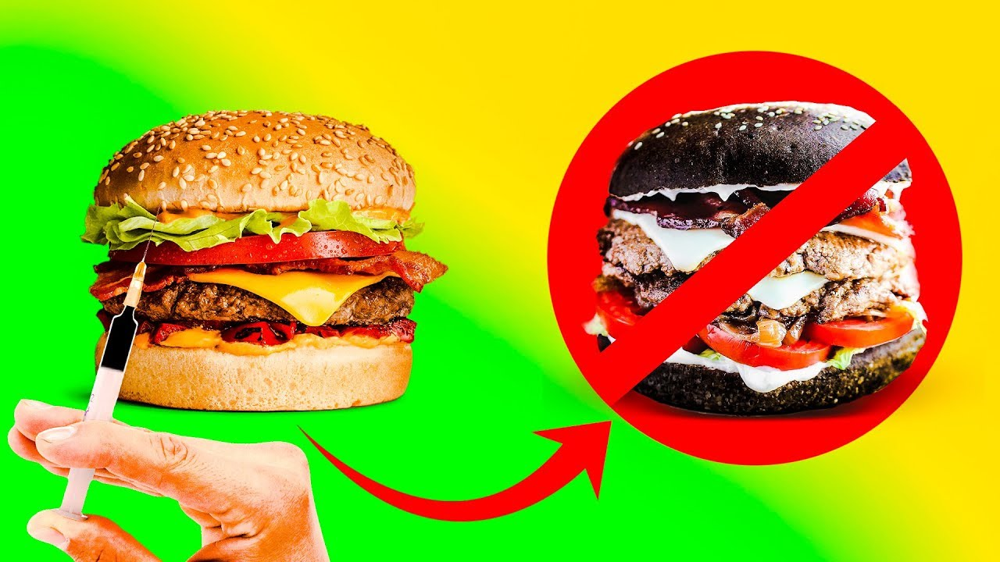

В начале ХХ века у гамбургеров была плохая репутация. Они считались опасной едой бедняков, которую продавали только с тележек у фабрик или на ярмарках. «Есть гамбургеры – все равно что питаться из мусорного ведра», – писали тогда газеты. Поправить репутацию булки с котлетой удалось в 20-е годы компании «Белый замок», которая установила свои грили на виду у публики. Потом подоспели драйвины и семейная политика Макдоналдса. Гамбургеры показались всем идеальной детской едой: легко жевать, держать в руке, сытно и недорого.
И самыми жуткими жертвами гамбургеров тоже оказались дети. Больше 700 детей заболели в Сиэтле в 1993-м и шестеро умерли, пообедав в фастфуде «Джек ин зе Бокс». В течение 8 лет после этого случая аналогичную инфекцию подцепили полмиллиона человек. Из них сотни были убиты гамбургерами, а именно содержащейся в фарше колибактерией.
Колибактерию 0157H7 выделили впервые в 1982-м. Она мутирует из обычной бактерии кишечника и выделяет токсин, поражающий его внутреннюю оболочку. 5% заболевших умирают в страшных муках, при этом антибиотики бессильны. Колибактерии необыкновенно устойчивы – к кислоте, хлорке, соли, морозу, живут в любой воде, сохраняются на прилавках неделями, а для инфицирования организма их нужно всего пять. Можно подцепить колиинфекцию, поплавав в озере или поиграв на зараженном ковре.
Этот мутант живет в коровах десятки лет. Но изменения в выращивании и забое скота создали идеальные условия для его распространения. Санитарные условия в коровьих загонах сравнивают со средневековым городом, где текли реки из нечистот. А когда шкуры обдирают на мясокомбинате, ошметки навоза и грязи падают в мясо.
Потому кусок сырого мяса на кухне – страшная угроза. Тесты микробиологов выявили, что на обычной кухонной раковине фекальных бактерий больше, чем на унитазе. Лучше съесть морковку, которая упала в унитаз, чем ту, что упала в раковину на кухне.
С фаршем дела еще хуже. Исследования показали, что в 78,6% говяжьего фарша есть микробы, распространяющиеся через фекалии. Медицинская литература о пищевых отравлениях изобилует эвфемизмами: «уровень форм колибактерий», «аэробное число». Но за этими словами стоит простое объяснение, почему от гамбургера можно заболеть: в мясе есть навоз.
Ситуация опасна еще и тем, что при современном уровне переработки фарш одного гамбургера содержит мясо десятков и даже сотен коров. И без колибактерий в нем хватает заразы. Каждый день в Америке около 200 000 людей страдают от пищевых отравлений, 900 попадают в больницы и 14 умирают.